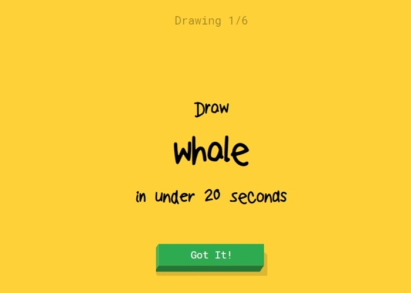
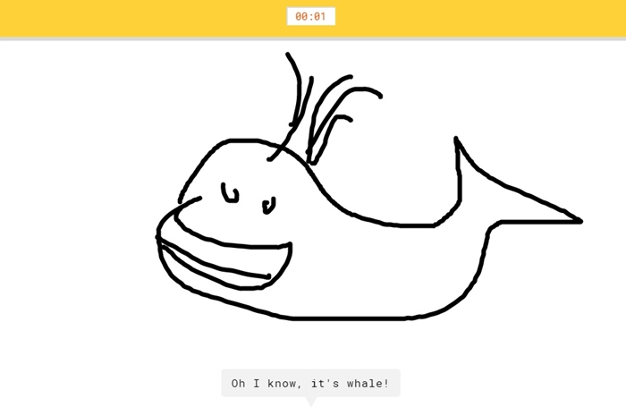
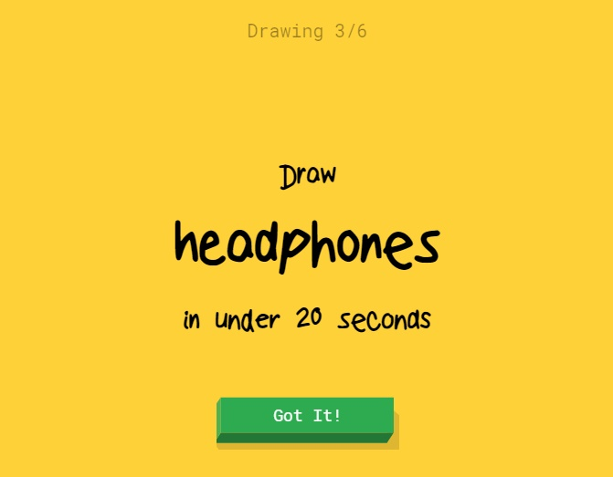
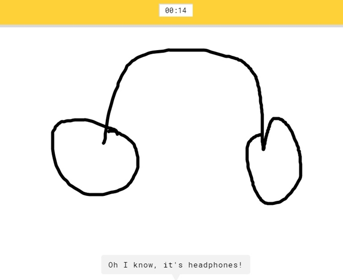

Google Quick Draw
Google เปิดประสบการณ์ใหม่ให้คนได้ใกล้ชิดกับปัญญาประดิษฐ์ (AI) มากขึ้นอีกครั้ง ด้วยการเปิดตัวเว็บเกม “Quick, Draw ” ที่ท้าให้คุณทดสอบทักษะการวาดรูป ซึ่งไม่จำเป็นต้องวาดสวยแต่ต้อง “วาดให้รู้เรื่อง”.
สำหรับเกม Quick, Draw! เป็นเกมวาดรูปให้ A.I. ทาย โดยที่ก่อนเริ่มวาด เกมจะบอกเราว่าให้วาดอะไร เช่น ให้วาดวัว เราก็ต้องวาดรูปวัวภายในเวลา 20 วินาที ซึ่งระหว่างที่เราวาด เจ้า A.I. ก็จะพยายามทายไปเรื่อยๆว่าเรากำลังวาดอะไรอยู่
ไปลองเล่น Quick Draw กันเถอะ
เริ่มจากรับโจทย์แรกกันก่อนเลย ซึ่งทางตัวเกมนั้นจะสุ่มโจทย์ให้เราได้วาดกัน ซึ่งคราวนี้โจทย์ที่ผมได้นั่นก็คือ “ปลาวาฬ (Whale) ” นั่นเอง ด้วยทักษะการวาดรูปชั้นครู เดี๋ยวผมจะโชว์ให้ได้เห็น ว่าโจทย์นี้น่ะมันหมูๆ
เรียบร้อย งานศิลปะชั้นเลิศ “ปลาวาฬลูซี่” ได้เสร็จสมบูรณ์แล้ว แถม AI ยังเข้าใจอีก สุดยอดไปเลย
โจทย์ที่สองนั่นก็คือ “หูฟัง(Headphones)” นั่นเอง
เรียบร้อยอีกอันครับ สุดยอดหูฟังของผมเอง
สามารถเข้าไปทดลองใช้ได้ที่ > Google Quick Draw.